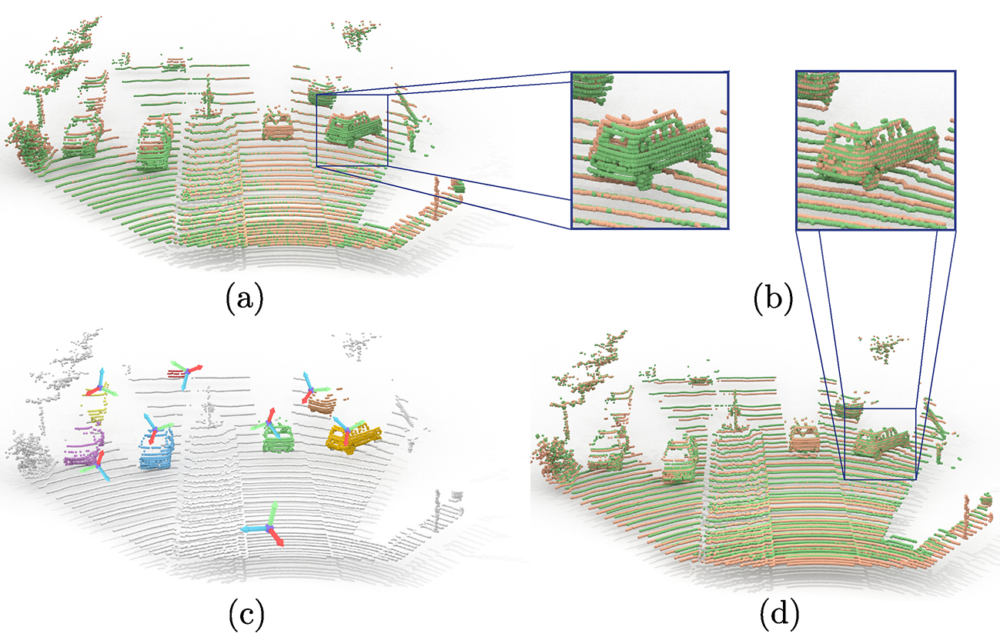
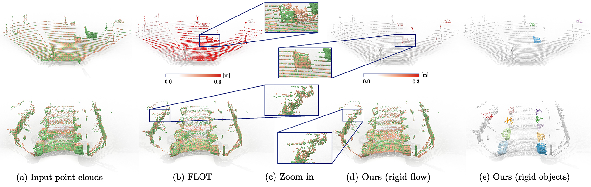

Our method consumes point clouds of two consecutive frames and estimates per-object transformation parameters, ego-motion, and object masks. These outputs can be combined into an object-level scene abstraction and pointwise rigid scene flow.
Abstract
We propose a data-driven scene flow estimation algorithm exploiting the observation that many 3D scenes can be explained by a collection of agents moving as rigid bodies. At the core of our method lies a deep architecture able to reason at the object-level by considering 3D scene flow in conjunction with other 3D tasks. This object level abstraction, enables us to relax the requirement for dense scene flow supervision with simpler binary background segmentation mask and ego-motion. Our mild supervision requirements make our method well suited for recently released massive data collections for autonomous driving, which do not contain dense scene flow annotations. As output, our model provides low-level cues like pointwise flow and higher-level cues such as holistic scene understanding at the level of rigid objects. We further propose a test-time optimization refining the predicted rigid scene flow. We showcase the effectiveness and generalization capacity of our method on four different autonomous driving datasets.

Given two frames as input (a) our method outputs rigid transformation for each agent (c) which can be used to recover pointwise rigid sceneflow. After applying the predicted rigid scene flow, the two frames are aligned (b, d).
Qualitative results
We train our model in a weakly supervised setting on semanticKITTI dataset and evaluate it on lidarKITTI as well as in a generalization setting on waymo-open.

lidarKITTI - EPE3D (red color denotes large error)
Ours
FLOT
waymoOpen - scene flow
Ours (generalization)
Ours (fine-tuned)
waymoOpen - object level abstraction
Ours (fine-tuned)
Ground Truth Instances
Citation
@article{gojcic2021ws3dsf,
title = {Weakly {S}upervised {L}earning of {R}igid {3D} {S}cene {F}low},
author = {Gojcic, Zan and Litany, Or and Wieser, Andreas and Guibas, Leonidas J and Birdal, Tolga},
year = {2021},
journal = {PUT IN THE ARXIV INFO}
}
Acknowledgments
We would like to thank Barbara Verbost for her help with the visualizations. This resarch was supported by the NVIDIA GPU Grant.
{kind=link}